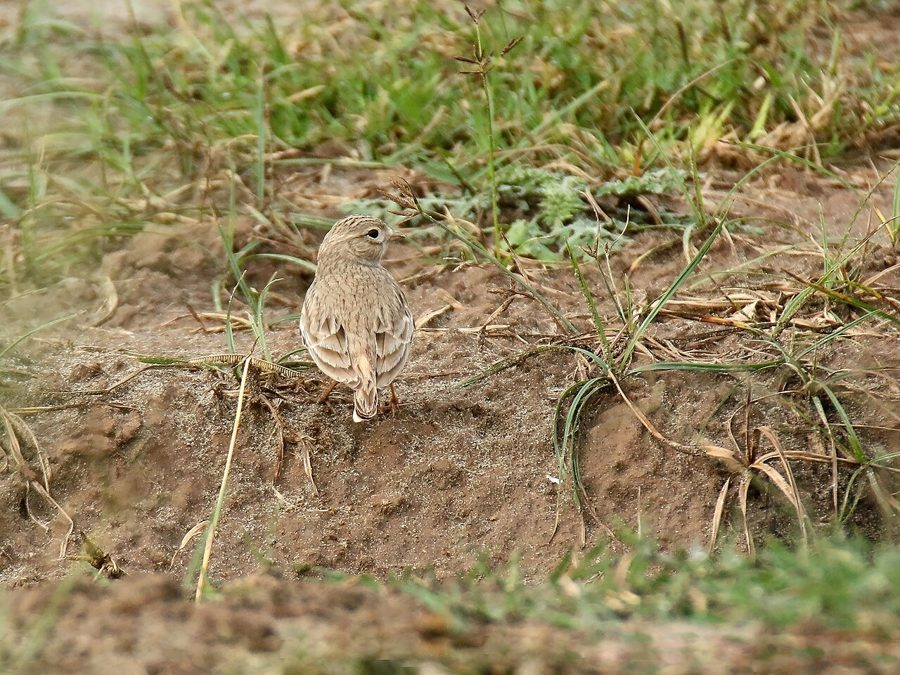

सैंड लार्कSand Lark
Calandrella raytal · Alaudidae · BRD-0207

- Scientific name वैज्ञानिक नाम
- Calandrella raytal (Strickland, 1850)
- Family कुल
- Alaudidae
- Hindi हिंदी
- सैंड लार्क
- Local names स्थानीय नाम
- sand lark, lark
- Status here यहाँ की स्थिति
- native
- Movement आवागमन
- Resident, here all year
- Known from कहाँ दर्ज
- Others have published records from the Basti–Ayodhya districts बस्ती–अयोध्या के ज़िलों से दूसरों के प्रकाशित अभिलेख
- IUCN IUCN
- LC
- Review समीक्षा
- audited and independently read
When to look कब देखें
Present all year. साल भर मौजूद।
Tell it apart from इनसे अलग पहचानें
सैंड लार्क / Sand Lark
Calandrella raytal (Strickland, 1850) — Alaudidae
सैंड लार्क — छोटी, फीकी रंग की चिड़िया जो पूर्वी उत्तर प्रदेश की खुली, रेतीली जमीन पर रहती है। इसकी हल्की भूरी रंगत और कम चिल्लाहट इसे अन्य लार्कों से अलग करती है। साल भर मैदानों में देखी जाती है। जमीन पर बैठकर दाने और कीड़े खाती है।
Quick Identification त्वरित पहचान
| Feature | Description |
|---|---|
| Size | Very small lark; 13–15 cm long |
| Build | Delicate, compact, upright |
| Plumage | Pale sandy-brown above; whitish underparts |
| Head | Small crest; no prominent markings |
| Markings | Subtle; few clear patterns |
| Bill | Short, fine, pointed |
| Behaviour | Runs on ground; reluctant flier |
| Vocalization | Quiet; simple twittering calls |
Field tip: Smallest lark in the region. A pale, sandy-coloured lark of open, bare ground. Often the most cryptic of larks, disappearing into the ground. Flies only when closely approached, with a low, weak flight.
हिंदी — कैसे पहचानें:
सबसे छोटी लार्क।
फीका, रेतीली-भूरा रंग।
खुली जमीन पर दिखता है।
कम चिल्लाहट।
Morphology आकारिकी
Biometrics:
| Measurement | Range |
|---|---|
| Total length | 130–150 mm |
| Wing | 76–85 mm |
| Tail | 50–60 mm |
| Bill | 9–11 mm |
| Tarsus | 19–22 mm |
| Weight | 16–22 g |
Size: 13–15 cm long; wingspan 24–27 cm. Smallest lark in the region.
Plumage: Uniformly pale sandy-brown above, including crown. No prominent markings or supercilium. Underparts pale buff to whitish. Tail sandy-brown with pale edges. Wings brown with pale fringes.
Sexual dimorphism: Minimal; males slightly larger.
Head: Small, rounded; minimal crest.
Bill: Short, stout, pointed; adapted for picking seeds.
Legs and feet: Pale; slender.
Juveniles: Slightly duller than adults.
Vocalisations. Call repertoire:
- Contact call: Soft, simple chirp or pit, given on ground.
- Flight call: A weak chirp-chirp, given rarely and reluctantly in flight.
- Song: A simple, quiet warble, not elaborate. Frequency.
हिंदी: शांत "चिर्प" आवाज़। उड़ते समय कम ही बोलता है। गीत साधारण और कोमल।
Behaviour & Ecology व्यवहार और पारिस्थितिकी
Ground dweller: Sand Lark is highly specialized for open, bare ground. It feeds on:
- Seeds of grasses and weeds
- Small insects and their larvae
- Small beetles and termites
- Occasionally small spiders
Foraging: Walks and hops on ground, pecking at seeds and insects. Very inconspicuous; easy to miss.
Social behaviour: Solitary or in pairs year-round; sometimes loose groups in non-breeding season.
Roosting: On the ground among bare or sparsely vegetated areas.
Predators: Small raptors, occasionally shrikes. Chicks vulnerable to snakes and corvids.
Flight: Very reluctant flier; prefers running. When flushed, flies low and quickly lands.
हिंदी: जमीन पर दाने खोजता है। अकेला या जोड़ों में। बहुत शांत पक्षी। कम उड़ता है।
Life Cycle / Phenology जीवन चक्र
| Month | Event |
|---|---|
| January–February | Resident; feeding on bare ground |
| March–April | Breeding begins; pair formation |
| April–June | Peak breeding; ground nesting |
| July–August | Fledglings; some second broods |
| September–October | Post-breeding dispersal; feeding flocks |
| November–December | Residents; settling into winter range |
Breeding: Resident breeder in eastern UP. Nests on ground in scrape among sparse vegetation or in bare areas. Clutch 3–4 eggs. May have 2 broods per season.
Moult: Prebasic moult post-breeding (July–September).
Site fidelity: Strong; returns to breeding territories in successive years.
हिंदी: साल भर यहाँ रहता है। मार्च से जून में प्रजनन करता है। जमीन में घोंसला बनाता है।
Host Plants or Prey आहार
| Food Type | Examples | Feeding Behaviour |
|---|---|---|
| Seeds | Grass and weed seeds | Picked from ground |
| Insects | Small beetles, termites, ants | Gleaned from ground |
| Small spiders | Ground-dwelling spiders | Picked from bare ground |
| Vegetation | Occasionally grass shoots | Minor component |
हिंदी: दाने और छोटे कीड़े खाता है। खुली जमीन से ही खाना निकालता है।
Predators / Natural Enemies शत्रु
- Avian predators: Common Kestrel, occasionally shrikes and hooded crows
- Mammalian predators: Jackals, foxes (chicks)
- Nest predators: Snakes, mongooses
- Parasites: Mites and feather lice
हिंदी: छोटे शिकारियों का शिकार होता है। जमीन पर घोंसला होने से ख़तरा।
Agricultural / Human Relevance कृषि प्रासंगिकता
Protected species: The Sand Lark is protected under the Wildlife (Protection) Act 1972. Hunting is prohibited in India.
Agricultural impact: Minor pest control through consumption of weed seeds and insects.
Field indicator: Presence indicates open, sparsely vegetated ground with low agricultural intensity.
Habitat specialist: Dependent on areas with minimal vegetation cover; may be negatively impacted by land-use intensification and afforestation of wastelands.
Cultural relevance: Known to local naturalists and birdwatchers as a cryptic resident of open ground.
हिंदी: यह विधि अधिनियम 1972 के तहत संरक्षित है। इसका शिकार करना कानूनी रूप से निषिद्ध है।
Expected Locally स्थानीय रूप से अपेक्षित
Not a field record. Written from published accounts for eastern Uttar Pradesh. No confirmed local sighting yet — if you have seen it, that is what the atlas needs.
अभी तक स्थानीय पुष्टि नहीं। यह विवरण प्रकाशित स्रोतों से है, किसी अवलोकन से नहीं।
Year-round range: Expected in eastern UP on open, sandy, or sparsely vegetated ground. GBIF holds published records from these districts. Particularly suitable habitats include sandy wastelands, fallow fields, and areas with minimal vegetation.
Habitat preference: Bare or sparsely vegetated open ground; avoids vegetation cover and shade.
Peak season: Present year-round; more easily detected in post-monsoon periods when ground is exposed.
Detection: Often first detected by flushing from near feet; listen for weak calls. Early morning is best for observation.
What a first record would be: A dated photograph or clear observation of the bird in eastern UP submitted through the About page, with location and date.
हिंदी: खुली, रेतीली जमीन पर साल भर अपेक्षित। बहुत शांत और छिपा हुआ पक्षी। फालो लैंड्स और बंजर जमीन पर आम।
Distribution वितरण
Global range: Across much of Asia from the Middle East to China and India. Resident and migratory populations.
In India: Distributed throughout the Indian subcontinent in suitable open ground habitats. More common in arid and semi-arid regions.
In Uttar Pradesh: Present in suitable habitats throughout the state; more common in drier areas.
In Basti district / eastern UP: Expected in open wastelands and fallow fields; extent of presence needs confirmation.
Research Questions शोध प्रश्न
- What is the detailed distribution and abundance of Sand Lark in eastern UP, given its cryptic nature?
- How do land-use changes (afforestation, intensification) affect its habitat suitability and population dynamics?
- What is the seasonal variation in diet composition and foraging behaviour?
- रेतीली जमीन की विभिन्न प्रकार की वनस्पतियों में इसकी संख्या में भिन्नता क्या है?
- How does this species interact with other grassland larks in areas of sympatry? (A child can observe and record larks in different open areas.)
- क्या इसकी प्रजनन सफलता खुली जमीन के प्रबंधन पर निर्भर करती है?
Similar Species मिलती-जुलती प्रजातियाँ
| Species | Key Difference | Hindi | Field Rule | |
|---|---|---|---|---|
| [[oriental_skylark\ | Oriental Skylark]] (Alauda gulgula) | Larger; more prominent crest; stronger call | भरत | Sand Lark is smaller, paler, quieter. |
| [[crested_lark\ | Crested Lark]] (Galerida cristata) | Much larger; prominent large crest | शिखरदार चकली | Crested is much larger and more obvious. |
Field rule: The Sand Lark is the smallest and palest lark of open ground. If the bird is larger and more noticeable, it is likely Oriental Skylark or Crested Lark.
Taxonomy & Classification वर्गीकरण
Original description. The species was described by Strickland in 1850. The type locality is the Indian subcontinent.
Subspecies. Multiple subspecies; C. r. raytal occurs in India.
Family and order placement. Order Passeriformes; family Alaudidae (larks). The genus Calandrella contains small larks of open ground.
Phylogenetic notes. Related to other small ground-dwelling larks across Asia.
IUCN status rationale. Assessed as Least Concern (LC) globally. Populations remain stable despite habitat changes. The species is adaptable to various open habitats. In India, it is protected under the Wildlife Protection Act 1972.
हिंदी: भारत में व्यापक रूप से पाई जाती है। खुली जमीन की विशेषज्ञ। कानून से पूरी तरह सुरक्षित है।
Photo Gallery फोटो गैलरी
No photos yet — add field photos to media/species/sand_lark/ and run node scripts/sync_photos.js.
Wanted photos:
- Adult on ground
- Running on sand or bare ground
- In flight (rare)
- Nesting behaviour
- Habitat: open sandy ground
References संदर्भ
- Strickland, H. E. (1850). On the genera and species of birds of the family Alaudidae. Contributions to Ornithology. Pp. 123–124.
- Ali, S. & Ripley, S. D. (1972). Handbook of the Birds of India and Pakistan. Vol. 6 (Cuckoos to Owls). Oxford University Press, Delhi. Pp. 391–393.
- Cramp, S. (ed.) (1988). Handbook of the Birds of Europe, the Middle East and North Africa: The Birds of the Western Palearctic. Vol. V (Tyrant Flycatchers to Thrushes). Oxford University Press. Pp. 440–445.
- Rasmussen, P. C. & Anderton, J. C. (2005). Birds of South Asia: The Ripley Guide. Smithsonian Institution, Washington, D.C. Pp. 397–399.
- GBIF Occurrence Data — Calandrella raytal, India.
- IUCN Red List (2024). Calandrella raytal — BirdLife International assessment. IUCN, Cambridge. Status: Least Concern.
Source file: species/fauna/birds/sand_lark.md